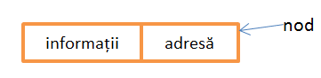

O listă este o colecție de noduri organizată conform unui criteriu în care există memorat o parte de informație și o parte de legătură pentru următorul nod conform criteriului :

Structurile dinamice de date sunt date structurate ale caror componente se aloca in mod dinamic.
Avantajele alocarii dinamice fata de alocarea acelorasi structuri de date in mod static (in segmentul de date) sau volatil (in segmentul de stiva) sunt:
-memorie suplimentara pentru programe
-posibilitatea de a utiliza aceasta memorie
Alocarea dinamica a componentelor structurii impune un mecanism prin care o noua componenta aparuta este legata in succesiune logica de corpul structurii deja format pana atunci. Rezulta ca fiecare componenta, pe langa informatia propriu-zisa pe care o detine, trebuie sa contina si o informatie de legatura cu componenta cu care se leaga logic in succesiune. Aceasta informatie de legatura va fi adresa componentei spre care se realizeaza succesiunea logica, iar mecanismul se mai numeste si alocare inlantuita dupa adrese.
In HEAP, structura respectiva va avea zone alocate componentelor sale in locurile gasite disponibile, care nu se succed intotdeauna in ordinea in care este realizata inlantuirea logica.
In functie de tipul inlantuirii realizate intre componente, exista urmatoarele tipuri de organizari:
-structuri liniare (de exeplu o lista care prelucreaza elevii care se inscriu la un examen)
->liste simplu inlantuite (liniare si circulare)
->liste dublu inlantuite (liniare si circulare)
-structuri arborescente (de exemplu reteaua ierarhica a angajatilor dintr-o firma)
-structuri retea (de exemplu o retea de orase care schimba materiale, combustibili etc)
Listele simplu înlănţuite reprezintă o utilizare foarte importantă a alocării dinamice a memoriei deoarece:
1.Sunt mai flexibile decat stiva si coada(care restrictioneaza operatiile de adaugare,acces si stergere a elementelor conform definitiilor lor.
2.Se recomanda folosirea listelor simplu inlantuite in rezolvarea problemelor specifice vectorilor,deoarece se utilizeaza eficient memoria care poate fi alocata sau eliberata in functie de cerintele programatorului.
3.Anumite genuri de probleme(cum ar fi operatiile cu matrici rare,respectiv polinoame rare) isi gasesc o rezolvare mai rapida,eficienta si utila folosind listele.
Avantajul utilizării listelor dublu înlănţuite rezultă din posibilitatea parcurgerii (traversării) listei în ambele sensuri: de la primul la ultimul, respectiv, de la ultimul la primul nod. Acest lucru permite o manipulare mai flexibilă a nodurilor listei.